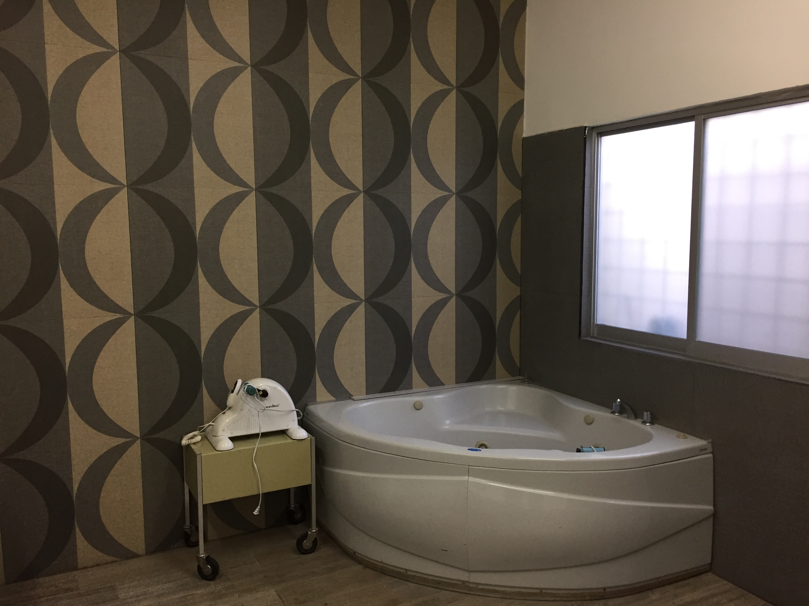
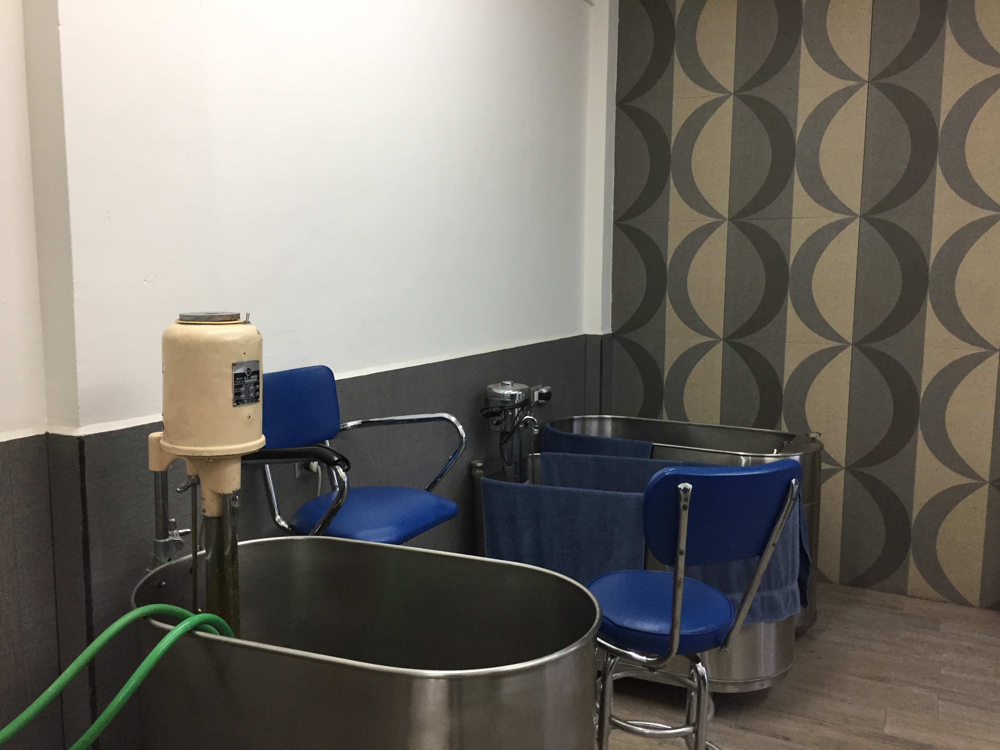
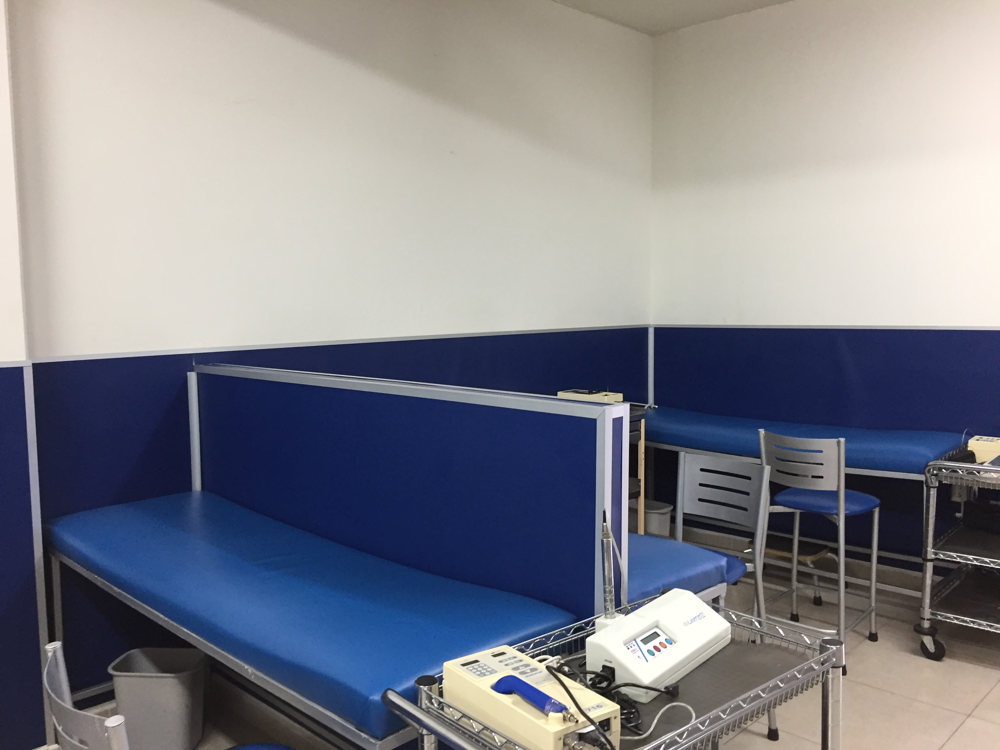
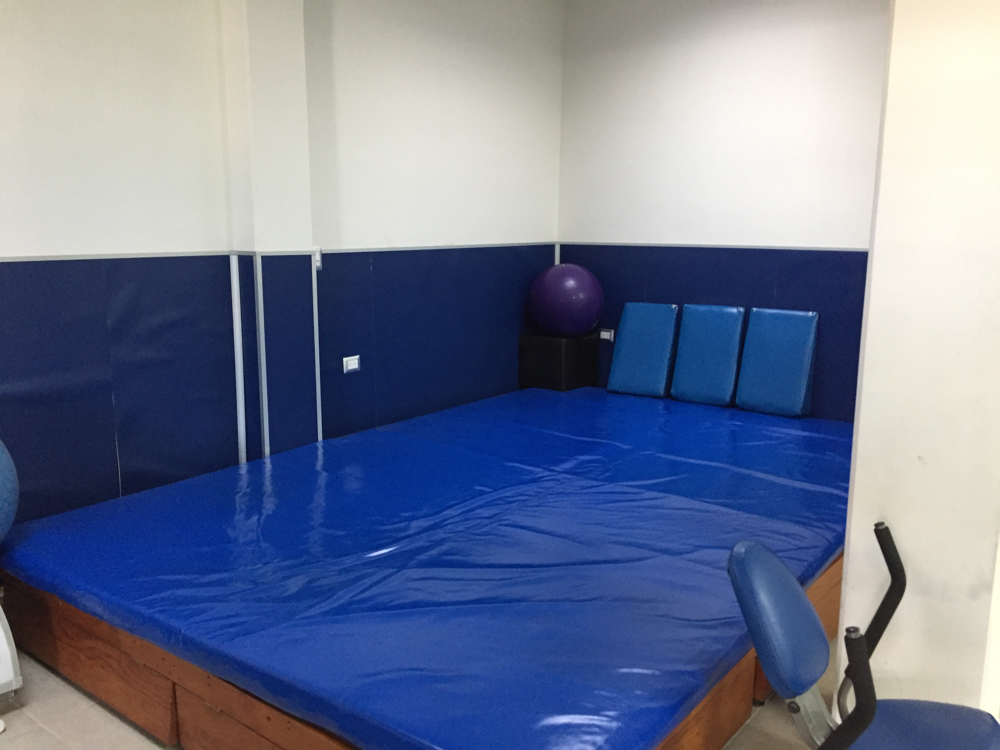
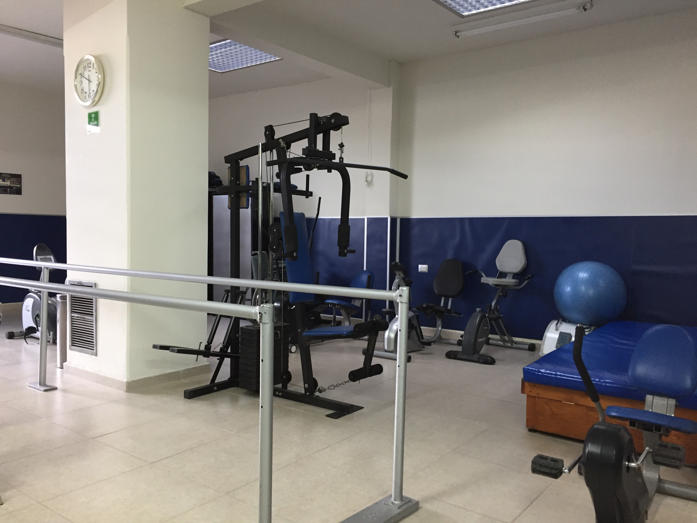

¡Vísitanos!
Calle SCOP No.407 Colonia Olga Margarita, Durango, Dgo., Mexico
Home
Nosotros
Servicios
Contacto
Ofrecemos servicios de alta calidad en rehabilitacion de:
Problemas neuro-musculo-esqueletico
Secuelas de evento vascular cerebral: amiparesia y hemiplejia, paralisis de nervio periferico, lesiones radiculares, paralisis facial
Defectos de Postura
Pie plano valgo, pie cavo, genuvalgo, genuvaro
Secuelas de Fractura
Columna Vertebral:espondiloartrosis, escoliosis, xifosis, enfermedades reumaticas de columna, post operados de hernia de disco, lumbalgia, ceatalgia
Enfermedades degenerativas, coxartrosis,gonartrosis, espondiloartrosis
Posquirurgicos de protesis de cadera, hombro y rodilla
Invalidez: problemas que generen discapacidad
Electrodiagnostico:electromiografia, potenciales evocados, somatosensoriales
Potenciales auditivos y visuales
Velocidad de conduccion nerviosa
Ultrasonido terapeutico
También contamos con terapias como:





Compresas quimicas
Diatermia
Hidroterapia
Termoterapia
Laser terapia: infrarrojo
Electroterapia
Mecanoterapia
<<<<<<< HEAD
======= >>>>>>> parent of 969b942... Serv_Final